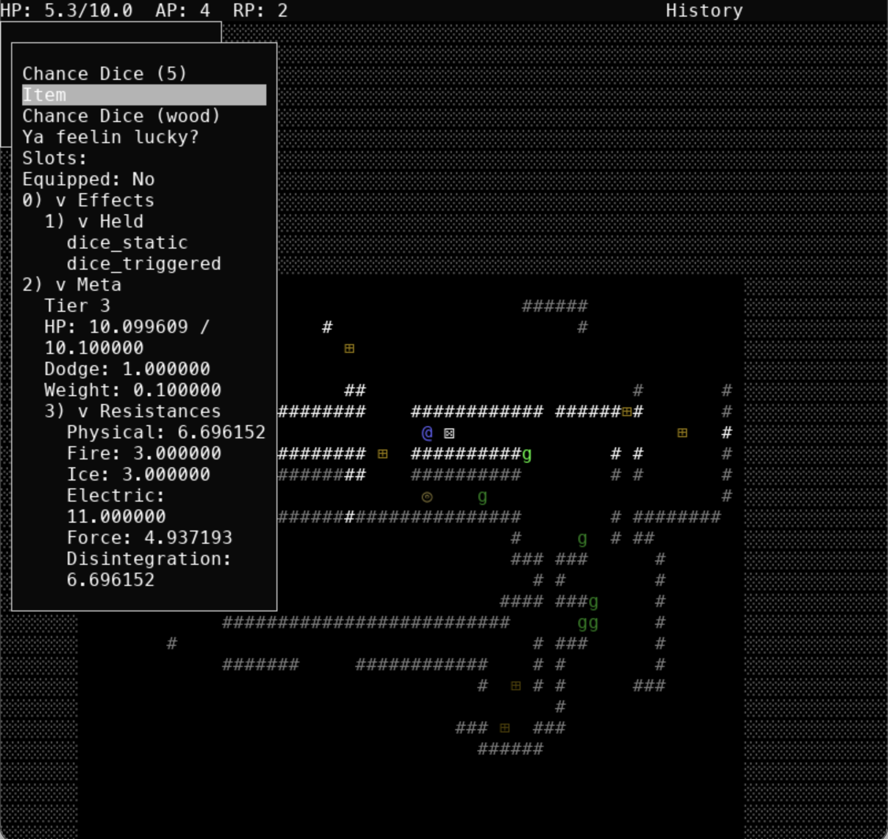
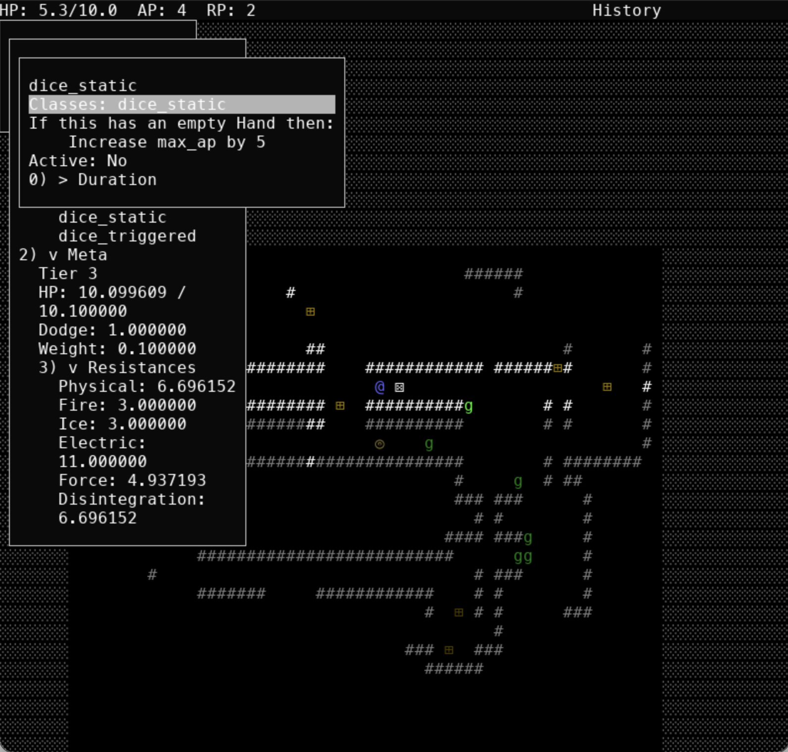
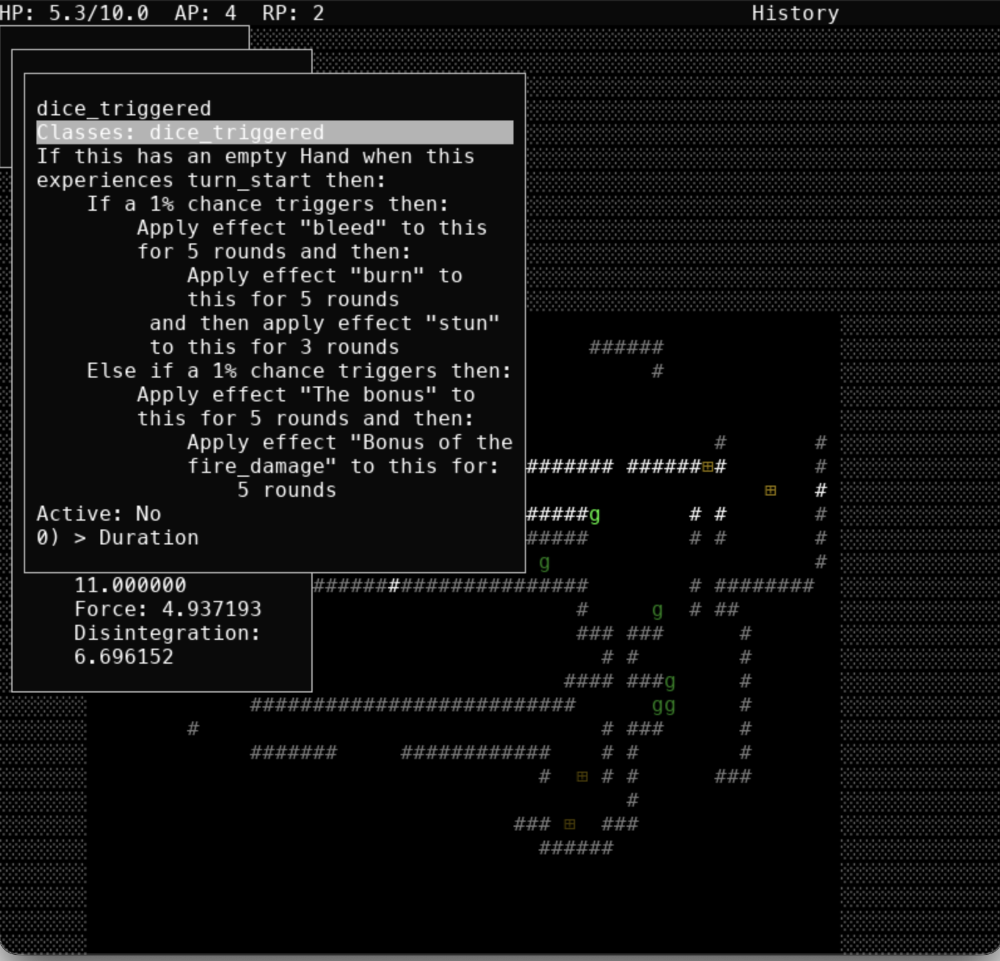
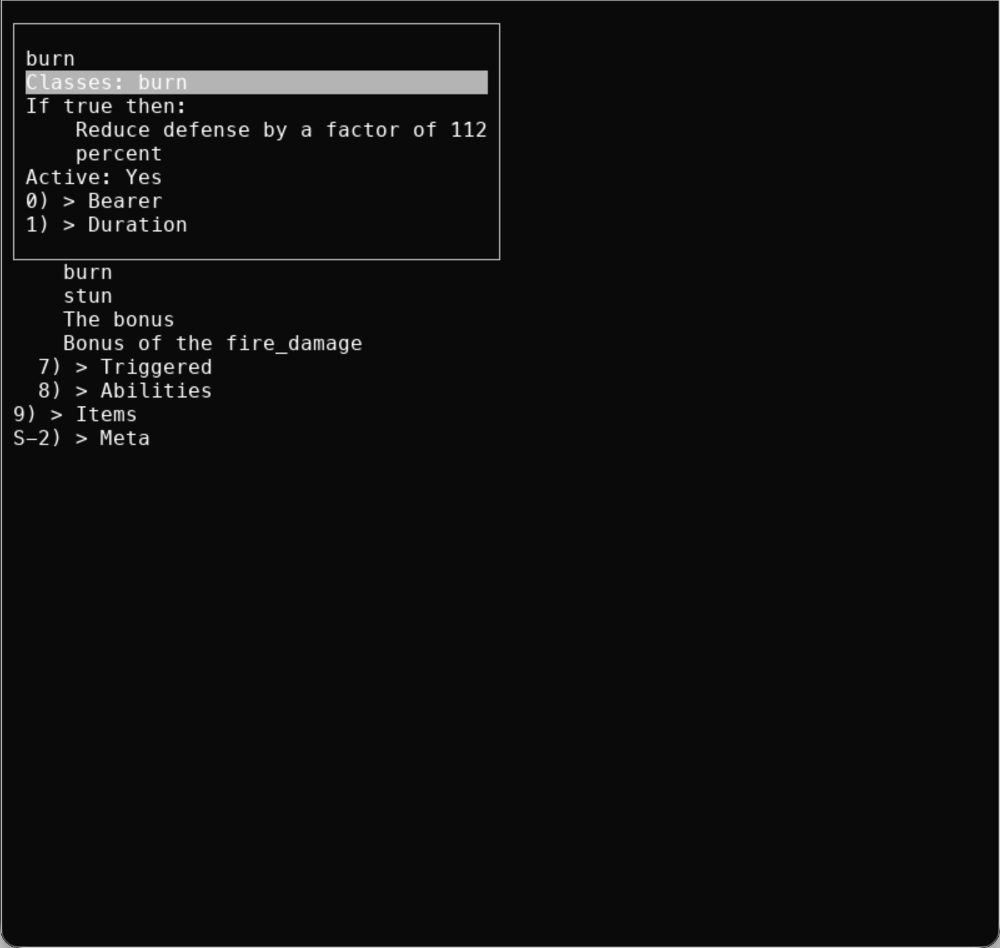
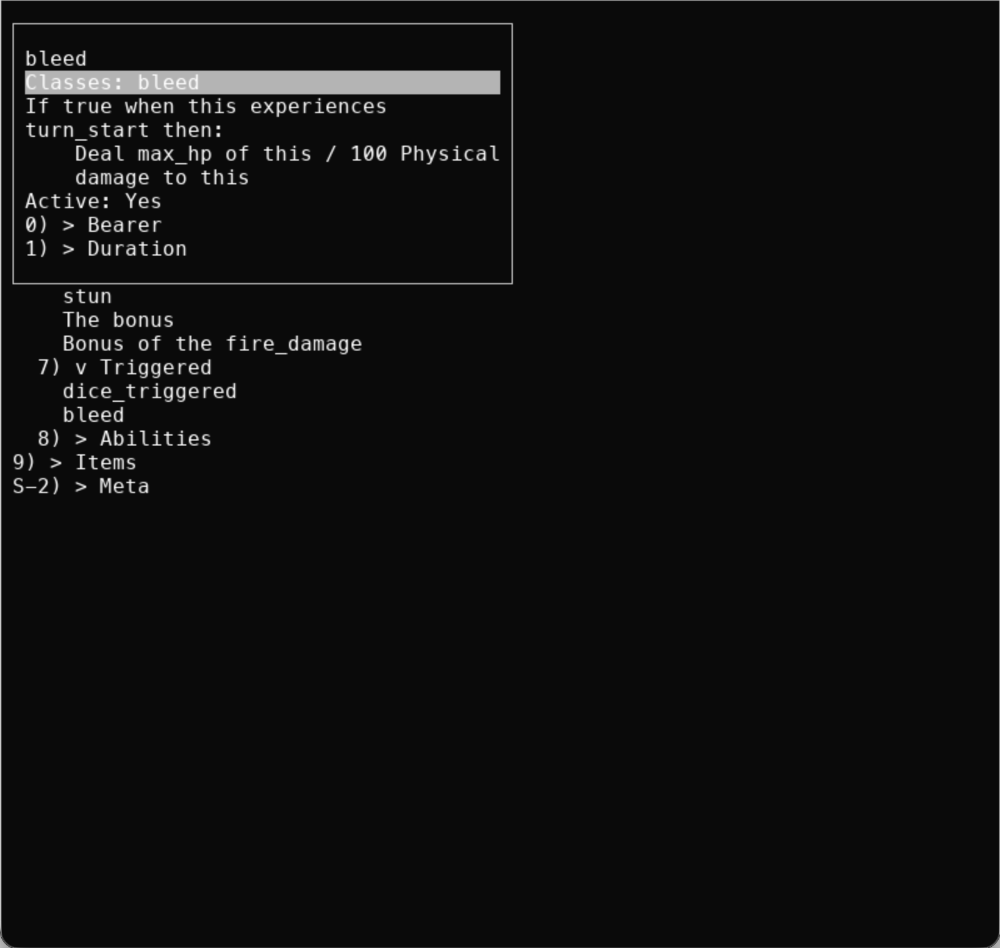
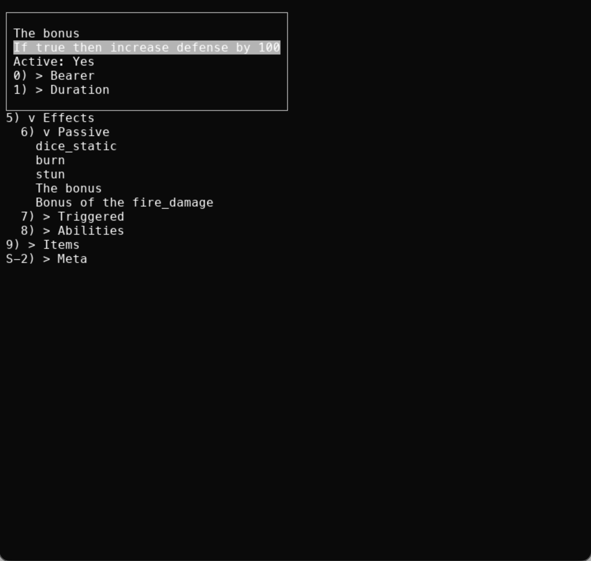
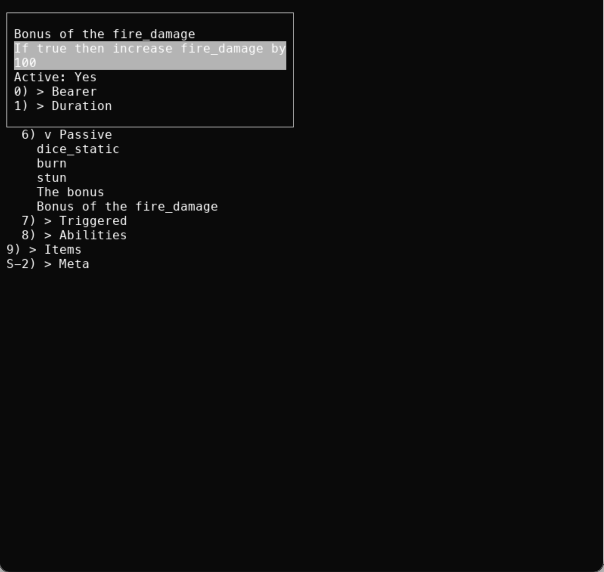

Hello y'all,
Another big update on Project: Esper today! To begin with, here is a new gameplay preview showing off many of the new features we've implemented:
As you can see, we've made several massive updates:
- NPC enemies with AI
- Menuing overhaul
- Randomized items
Now we'll break down the status on each of these in turn.
Menu / UI Upgrade
When we last left off, the menu system was a little cluttered. Especially the Look menu had a lot of lines, wrapping, and overall detrital look that made it difficult to effectively use, even with the foldable section headers. So we changed a lot of how the UI system works behind the scenes to fix both problems. TAB is now a default reserved key for opening information about whatever effect or entity is referenced on the current line. This is very useful for focusing these larger information blobs into one place visually, and keeps the parent menus from being so lengthy. Not too much to talk about, but certainly a helpful change.
Enemies
Although we only showed off a basic goblin enemy in the video, the AI system is actually fully built out for any enemy we might handcraft or randomly generate. And we successfully made them able to adapt to their specific ability set, the goals it implies, and what actions they are actually able to take. Essentially the algorithm is:
1. Assemble what the NPC cares about (the goal set).
2. Enumerate viable abilities (affordable and active actions or reactions).
3. For each ability, find its best targeting (iterate over possible targets for each target the ability targets, scoring each against the goals)
4. Score the ability as a whole.
5. Weighted lottery (based on positive ability scores).So everything is scored against the initial goal set, which takes into consideration:
- Which effect predicates are already satisfied
- Which effects are beneficial to have online
- How powerful effects are relative to one another
- Basic universal goals that keep the AI ticking (kill enemies, heal allies, etc.)
Thus, the NPC can adapt to changing circumstances in an intelligent manner. One interesting result is that the targeting system we proposed (and had implemented...) in Post #6 is nearly unused now (it's left in as a fallback). While this means that individual NPCs won't have as much personality, those fixed personality modes we described just limited the possible action space too much. A goblin could only ever move towards its allies or its enemies, when in practice both are necessary at different times. As we begin implementing more maps, enemies, and effects before our next dev log, we will see more of this goal-driven behavior.
Randomized Items
Perhaps the most exciting update for this week is the entire randomized effect and item pipeline. We described how effect generation would work as early as Post #2, and that... pretty much just worked swimmingly with a few finer details. We gave each possible DSL node an unlock tier, a weight, a child exclusion set, and a random generation function (where applicable). A node cannot be rolled into effects of less than its unlock tier, and it then scales up to its full probability over the next 10 tiers. This means that the more complex nodes are reserved for higher tier effects. For example, the Effect node distribution at tier 1 (including the effects of the rarity weight and an additional weight against nodes with manu children) looks like:
mark: 21.7%
teleport: 16.3%
heal: 16.3%
reveal: 16.3%
damage: 16.3%
move: 13.0%While at tier 10:
mark: 10.2%
heal: 7.7%
reveal: 7.7%
damage: 7.7%
teleport: 7.7%
move: 6.1%
link: 6.1%
bind: 5.4%
set_terrain: 4.9%
become_hostile: 4.1%
become_peaceful: 4.1%
attack: 3.9%
purify: 3.7%
identify_items: 3.6%
identify_effects: 3.6%
identify_metadata: 3.1%
set_wall: 2.6%
charm: 2.6%
create_zone: 1.4%
revive: 1.1%
spawn: 0.7%
dominate: 0.6%
apply_condition: 0.5%
apply: 0.5%
polymorph: 0.3%
kill: 0.3%And at tier 20:
mark: 7.2%
teleport: 5.4%
bind: 5.4%
heal: 5.4%
reveal: 5.4%
link: 5.4%
damage: 5.4%
purify: 4.3%
move: 4.3%
set_terrain: 4.3%
become_hostile: 3.6%
charm: 3.6%
identify_metadata: 3.6%
identify_items: 3.6%
identify_effects: 3.6%
become_peaceful: 3.6%
set_wall: 3.1%
attack: 3.1%
revive: 2.7%
create_zone: 2.4%
spawn: 2.4%
polymorph: 2.2%
dominate: 2.2%
kill: 2.0%
apply_condition: 1.8%
clone: 1.8%
apply: 1.7%We are also able to do a pretty good job of balancing effect tier. As we described in Post #2, we first generate the predicate using the weight table of the target effect tier. While we do so, we track the tier of the predicate, giving us an updated effect tier. This is what determines both the weight table for the remaining section(s) of the effect and the values of any constants within. This gives us very promising results. Tier 1 effects look like:
If true then decrease short_sword_offense by 1
If true then:
Reduce max_ap by a factor of 299 percent
If true then for 1 AP:
Move this spear_offense of this southTier 10 might look like:
If:
Object legs last interacted with experienced death in the past 15 rounds
When Item experiences heal then:
Teleport a random object in Plane of Fire to:
(53, 14)
If chair cursed:
Furniture that last inflicted turn_start on closest visible object
when this effect ends then:
Spawn UBkce at (7, 1) as kKVkd
If:
For the past 9 rounds selected visible point is walkable
Then for 11 RP turn :
Closest highest physical_resistance of visible Item object that is held to:
Location of least damaged object that is touching hand
hostile towards:
8 random esper in a range of 9 tiles from:
Object that caused last heal
If Body Furniture that has ap > 31 percent last interacted with
has an empty body
then for 14 AP or 17 RP:
Change (6, 13) to dirtAnd tier 20:
If lowest max_weight object is peaceful with least damaged:
Object that is in level 14 of Plane of Fire
then for 13 AP purify up to 18 targeted:
Air elemental that has hp > 89 percent
of bleed conditions
If dragon is touching:
Closest coin that has disintegration_resistance > 137137 to:
Closest visible primordial
when this effect ends then:
Kill object that caused last death with less than:
Min of 1459866 and:
Number of visible Body that is in line of sight
absolute hp
If closest hostile undead to:
Farthest visible elf that has max_hp >:
Max of 385463 and number of visible Furniture
is in water
then for 18 RP:
Apply effect "txlQy" to this for 38 roundsNote that as of yet some randomly generated strings are just using random letters instead of drawing from lists of possible strings like they eventually will. These almost always have a resulting tier lower than what was asked for, which we balance as we mentioned in Post #2 by just generating multiple effects for an item until a total target threshold is reached. For random names, we simply define a list of grammatical templates (like "$n's $v", "the $a $v", or "the $v of $a $n's $n"), then pick random words mapped from the nodes in the effect, and substitute them into the slots of the templates. Simple, but it gets the job done. Of course, the random items shown in the video are just examples of the random effects working, so we'll be working on that so the random items have similarly appropriate names, glyphs, colors, etc.
Next Steps
But yeah, that's all four of the major technical roadblocks we mentioned in Post #5 complete: programmability, interpretability, reflection, and displayability. Thus, lots more hard content to come soon as we begin building out the shape of the actual game en masse. Speaking of which...
Community Poll Results
The top-liked comment on our community poll last week about an item to add to the game was "a pair of dice that have extreme chances for good and bad luck... like having a 1% chance of getting every buff in the game but also 1% to get every debuff". Here's our interpretation:







While there are far too many possible buffs and debuffs to put in one item, we went ahead and added two that should be interesting and helpful, as well as an interesting predicate and static effect to incentivize holding the dice.
Anyway, that's all for today! See y'all next time!